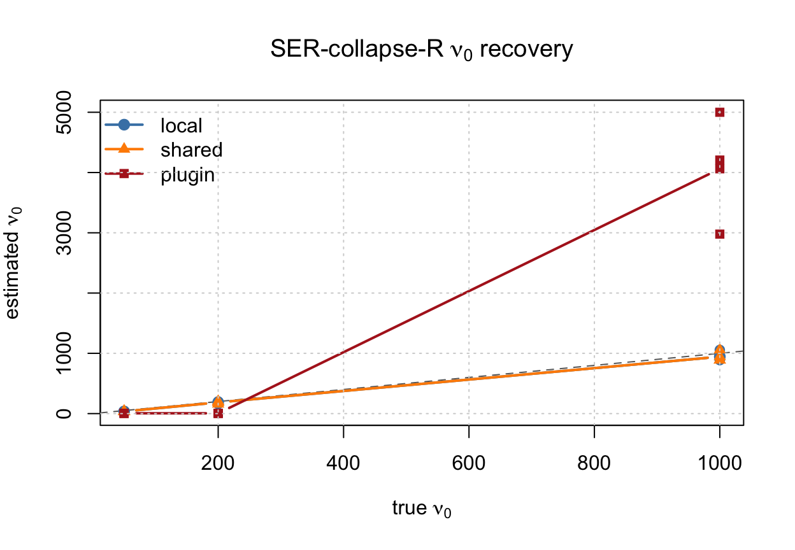
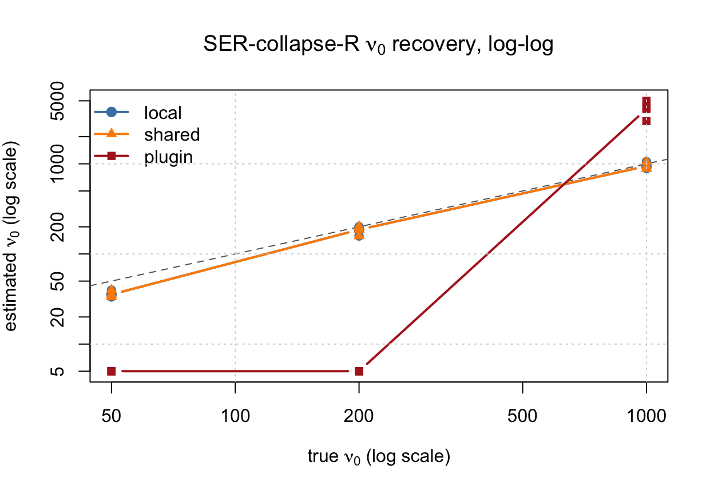
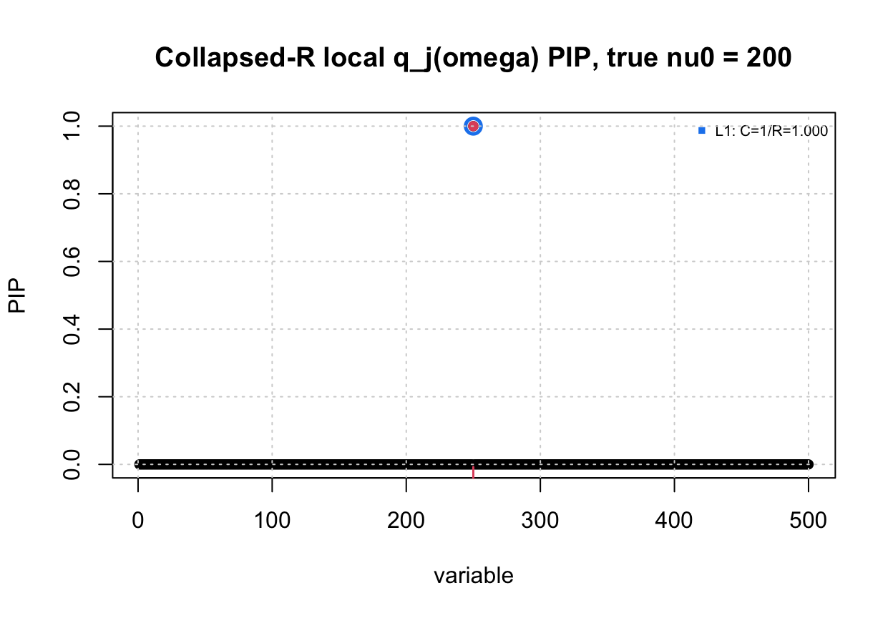
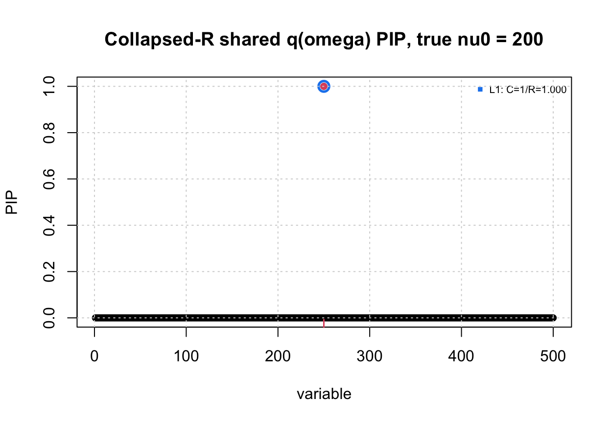
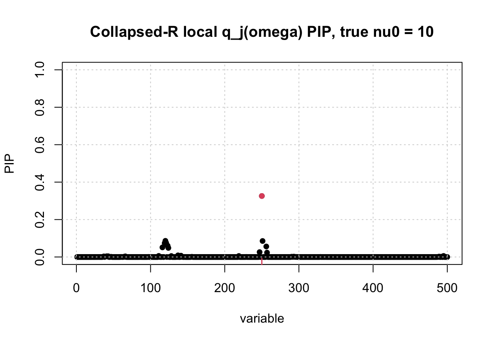
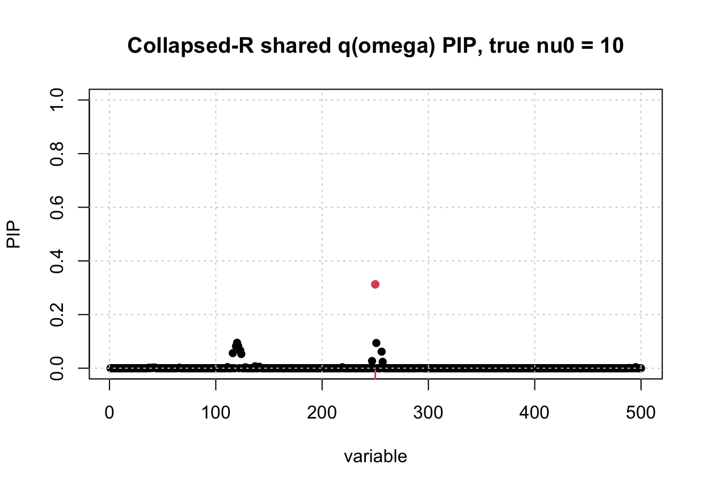

Last updated: 2026-07-01
Checks: 6 1
Knit directory: susie-relax/
This reproducible R Markdown analysis was created with workflowr (version 1.7.2). The Checks tab describes the reproducibility checks that were applied when the results were created. The Past versions tab lists the development history.
The R Markdown is untracked by Git. To know which version of the R
Markdown file created these results, you’ll want to first commit it to
the Git repo. If you’re still working on the analysis, you can ignore
this warning. When you’re finished, you can run
wflow_publish to commit the R Markdown file and build the
HTML.
Great job! The global environment was empty. Objects defined in the global environment can affect the analysis in your R Markdown file in unknown ways. For reproduciblity it’s best to always run the code in an empty environment.
The command set.seed(20260621) was run prior to running
the code in the R Markdown file. Setting a seed ensures that any results
that rely on randomness, e.g. subsampling or permutations, are
reproducible.
Great job! Recording the operating system, R version, and package versions is critical for reproducibility.
Nice! There were no cached chunks for this analysis, so you can be confident that you successfully produced the results during this run.
Great job! Using relative paths to the files within your workflowr project makes it easier to run your code on other machines.
Great! You are using Git for version control. Tracking code development and connecting the code version to the results is critical for reproducibility.
The results in this page were generated with repository version 6e0cefb. See the Past versions tab to see a history of the changes made to the R Markdown and HTML files.
Note that you need to be careful to ensure that all relevant files for
the analysis have been committed to Git prior to generating the results
(you can use wflow_publish or
wflow_git_commit). workflowr only checks the R Markdown
file, but you know if there are other scripts or data files that it
depends on. Below is the status of the Git repository when the results
were generated:
Ignored files:
Ignored: .DS_Store
Ignored: .Rhistory
Ignored: .Rproj.user/
Ignored: analysis/.DS_Store
Ignored: analysis/ser-relax-vs-model-b-pip.html
Ignored: code/.Rhistory
Untracked files:
Untracked: analysis/SER-collapse-R-demonstrate.Rmd
Untracked: analysis/SuSiE-collapse-R-shared-omega-demonstrate.Rmd
Untracked: code/SER-collapse-R.R
Untracked: code/SuSiE-collapse-R-shared-omega.R
Untracked: collapse-R-approach.aux
Untracked: collapse-R-approach.fdb_latexmk
Untracked: collapse-R-approach.fls
Untracked: collapse-R-approach.log
Untracked: collapse-R-approach.pdf
Untracked: tex/collapse-R-approach.aux
Untracked: tex/collapse-R-approach.log
Untracked: tex/collapse-R-approach.pdf
Untracked: tex/collapse-R-approach.synctex.gz
Untracked: tex/collapse-R-approach.tex
Unstaged changes:
Modified: analysis/index.Rmd
Note that any generated files, e.g. HTML, png, CSS, etc., are not included in this status report because it is ok for generated content to have uncommitted changes.
There are no past versions. Publish this analysis with
wflow_publish() to start tracking its development.
knitr::opts_chunk$set(
echo = TRUE,
message = FALSE,
warning = FALSE,
fig.width = 6.5,
fig.height = 4.5
)
source("code/SER-collapse-R.R")
source("code/sim_2pop.R")
source("code/plot.R")
plot_pip <- function(fit, R_for_cs, beta_true, main) {
susie_plot_alpha(
fit,
R = R_for_cs,
b = beta_true,
main = main,
coverage = 0.95,
min_abs_corr = 0.5
)
grid()
}
as_susie_single_effect <- function(fit) {
list(
alpha = matrix(fit$pi, nrow = 1),
pip = as.numeric(fit$pi)
)
}This page tests the collapsed-\(R\)
single-effect approach derived in
tex/collapse-R-approach.tex. The model integrates out the
latent LD matrix \(R\) under \[
R \sim IW_J(\nu_0\bar R,\nu_0+J+1)
\] and then fits a single-effect model \[
b=\beta e_\gamma,
\qquad
\beta\sim N(0,\sigma_0^2).
\]
For a candidate causal SNP \(j\), define \[ a_j(\nu_0)=\nu_0\bar R_{jj}+Nx_j^2. \] The collapsed likelihood contains the one-dimensional expectation \[ E_{\omega\sim\chi^2_{\nu_0+3}} \left[ \exp\left\{ -\frac{N a_j(\nu_0)\beta^2}{2\omega} \right\} \right]. \]
The code implements three approximations to this term:
local: use one local variational distribution \(q_j(\omega)\) for each candidate SNP.shared: use one global variational distribution \(q(\omega)\) shared across all candidate
SNPs.plugin: replace \(\omega\) by its prior mean \(\nu_0+3\).For each candidate value of \(\nu_0\), the algorithm optimizes the corresponding coordinate updates and then chooses the \(\nu_0\) value with the largest optimized lower bound or plug-in objective.
This mirrors analysis/SER-relax-demonstrate.Rmd, except
that the fitting function is fit_ser_collapse_r().
sim_2pop().The summary statistic is simulated with one true causal SNP, located at the middle SNP in the region.
nu0_grid <- c(50, 200, 1000)
variants <- c("local", "shared", "plugin")
N <- 20000L
N01 <- 1L
N0 <- 2000L
J <- 500L
n_rep <- 3
sigma0 <- 0.2
beta <- 0.2
gamma <- ceiling(J / 2)
max_iter <- 300
tol <- 1e-5
seed <- 100
fit_nu0_grid <- sort(unique(c(
exp(seq(log(5), log(5000), length.out = 41)),
nu0_grid,
10
)))run_ser_collapse_r_recovery_demo <- function(
nu0_grid,
variant,
n_rep,
N,
J,
sigma0,
beta,
gamma,
fit_nu0_grid,
max_iter,
tol,
seed,
Rbar,
verbose = FALSE) {
out <- vector("list", length(nu0_grid) * n_rep)
i <- 0
for (nu0_true in nu0_grid) {
for (rep_id in seq_len(n_rep)) {
i <- i + 1
sim_seed <- seed + i
set.seed(sim_seed)
iw_time <- system.time({
R_true <- sample_inverse_wishart(
df = nu0_true + J + 1,
scale = nu0_true * Rbar
)
})
R_true = cov2cor(R_true)
mean_x <- beta * R_true[, gamma]
x_time <- system.time({
x <- as.numeric(MASS::mvrnorm(1, mu = mean_x, Sigma = Rbar / N))
})
fit_time <- system.time({
fit <- fit_ser_collapse_r(
x = x,
Rbar = Rbar,
N = N,
sigma0 = sigma0,
nu0_grid = fit_nu0_grid,
variant = variant,
max_iter = max_iter,
tol = tol,
verbose = verbose
)
})
out[[i]] <- data.frame(
nu0_true = nu0_true,
nu0_hat = fit$nu0,
rep = rep_id,
gamma_true = gamma,
gamma_hat = unname(fit$gamma_hat),
top_pi = unname(max(fit$pi)),
beta = beta,
variant = variant,
converged_iter = length(fit$elbo),
iw_seconds = unname(iw_time["elapsed"]),
x_seconds = unname(x_time["elapsed"]),
fit_seconds = unname(fit_time["elapsed"])
)
}
}
results <- do.call(rbind, out)
list(
results = results,
fit_nu0_grid = fit_nu0_grid
)
}rbar_time <- system.time({
coalescent <- sim_2pop(
chrom = "chr22",
start = 20e6,
end = 21e6,
T_split = 20,
n_gwas = N01,
n_ref = N0,
J = J,
h2 = 0.01,
seed = 1
)
R0 <- cov2cor(coalescent$R0)
Rbar <- 0.99 * R0 + 0.01 * diag(1, J)
Rbar <- cov2cor(Rbar)
})
range(eigen(Rbar, symmetric = TRUE, only.values = TRUE)$values)[1] 0.01000 30.77302rbar_time user system elapsed
1.842 0.371 2.606 The same \(R^{\mathrm{true}}\) and
\(x\) draws are used for all three
variants because the same Rbar and simulation seeds are
reused.
variant_runs <- vector("list", length(variants))
names(variant_runs) <- variants
for (variant in variants) {
variant_runs[[variant]] <- run_ser_collapse_r_recovery_demo(
nu0_grid = nu0_grid,
variant = variant,
n_rep = n_rep,
N = N,
J = J,
sigma0 = sigma0,
beta = beta,
gamma = gamma,
fit_nu0_grid = fit_nu0_grid,
max_iter = max_iter,
tol = tol,
seed = seed,
Rbar = Rbar,
verbose = FALSE
)
}
nu0_results <- do.call(rbind, lapply(variant_runs, `[[`, "results"))
row.names(nu0_results) <- NULL
nu0_results nu0_true nu0_hat rep gamma_true gamma_hat top_pi beta variant
1 50 39.71641 1 250 250 0.884176474 0.2 local
2 50 33.41720 2 250 250 0.851742020 0.2 local
3 50 33.41720 3 250 250 0.963967368 0.2 local
4 200 158.11388 1 250 250 0.999781427 0.2 local
5 200 200.00000 2 250 250 0.999999222 0.2 local
6 200 200.00000 3 250 250 0.999999988 0.2 local
7 1000 889.13971 1 250 250 1.000000000 0.2 local
8 1000 1056.74452 2 250 250 1.000000000 0.2 local
9 1000 889.13971 3 250 250 1.000000000 0.2 local
10 50 39.71641 1 250 250 0.868403577 0.2 shared
11 50 33.41720 2 250 250 0.831157272 0.2 shared
12 50 33.41720 3 250 250 0.959597326 0.2 shared
13 200 158.11388 1 250 250 0.999811577 0.2 shared
14 200 200.00000 2 250 250 0.999999551 0.2 shared
15 200 200.00000 3 250 250 0.999999996 0.2 shared
16 1000 889.13971 1 250 250 1.000000000 0.2 shared
17 1000 1056.74452 2 250 250 1.000000000 0.2 shared
18 1000 889.13971 3 250 250 1.000000000 0.2 shared
19 50 5.00000 1 250 409 0.003241839 0.2 plugin
20 50 5.00000 2 250 79 0.003124856 0.2 plugin
21 50 5.00000 3 250 62 0.003291060 0.2 plugin
22 200 5.00000 1 250 294 0.003860961 0.2 plugin
23 200 5.00000 2 250 94 0.004388472 0.2 plugin
24 200 5.00000 3 250 319 0.004038303 0.2 plugin
25 1000 2978.31072 1 250 250 1.000000000 0.2 plugin
26 1000 5000.00000 2 250 250 1.000000000 0.2 plugin
27 1000 4206.97571 3 250 250 1.000000000 0.2 plugin
converged_iter iw_seconds x_seconds fit_seconds
1 65 0.010 0.020 0.853
2 71 0.010 0.015 0.797
3 73 0.009 0.014 0.827
4 29 0.009 0.015 0.792
5 28 0.009 0.014 0.859
6 28 0.010 0.015 0.852
7 10 0.010 0.015 0.810
8 9 0.009 0.015 0.811
9 9 0.009 0.014 0.795
10 66 0.009 0.015 0.135
11 72 0.009 0.014 0.131
12 74 0.010 0.015 0.130
13 29 0.010 0.014 0.126
14 28 0.009 0.015 0.141
15 28 0.009 0.015 0.181
16 10 0.010 0.015 0.125
17 9 0.009 0.014 0.122
18 9 0.010 0.015 0.129
19 2 0.010 0.015 0.011
20 2 0.009 0.014 0.012
21 2 0.009 0.015 0.011
22 2 0.009 0.015 0.011
23 2 0.009 0.015 0.012
24 2 0.009 0.014 0.012
25 2 0.009 0.014 0.012
26 2 0.009 0.014 0.013
27 2 0.009 0.014 0.012nu0_summary <- aggregate(
cbind(nu0_hat, top_pi, converged_iter, iw_seconds, x_seconds, fit_seconds) ~
variant + nu0_true,
data = nu0_results,
FUN = mean
)
nu0_summary variant nu0_true nu0_hat top_pi converged_iter iw_seconds x_seconds
1 local 50 35.51693 0.899961954 69.666667 0.009666667 0.01633333
2 plugin 50 5.00000 0.003219252 2.000000 0.009333333 0.01466667
3 shared 50 35.51693 0.886386058 70.666667 0.009333333 0.01466667
4 local 200 186.03796 0.999926879 28.333333 0.009333333 0.01466667
5 plugin 200 5.00000 0.004095912 2.000000 0.009000000 0.01466667
6 shared 200 186.03796 0.999937041 28.333333 0.009333333 0.01466667
7 local 1000 945.00798 1.000000000 9.333333 0.009333333 0.01466667
8 plugin 1000 4061.76214 1.000000000 2.000000 0.009000000 0.01400000
9 shared 1000 945.00798 1.000000000 9.333333 0.009666667 0.01466667
fit_seconds
1 0.82566667
2 0.01133333
3 0.13200000
4 0.83433333
5 0.01166667
6 0.14933333
7 0.80533333
8 0.01233333
9 0.12533333aggregate(
cbind(iw_seconds, x_seconds, fit_seconds) ~ variant,
data = nu0_results,
FUN = sum
) variant iw_seconds x_seconds fit_seconds
1 local 0.085 0.137 7.396
2 plugin 0.082 0.130 0.106
3 shared 0.085 0.132 1.220variant_cols <- c(local = "steelblue", shared = "darkorange", plugin = "firebrick")
variant_pch <- c(local = 19, shared = 17, plugin = 15)
plot(
nu0_results$nu0_true,
nu0_results$nu0_hat,
type = "n",
xlab = expression("true " * nu[0]),
ylab = expression("estimated " * nu[0]),
main = expression("SER-collapse-R " * nu[0] * " recovery")
)
abline(0, 1, lty = 2, col = "gray40")
for (variant in variants) {
idx <- nu0_results$variant == variant
points(
nu0_results$nu0_true[idx],
nu0_results$nu0_hat[idx],
pch = variant_pch[variant],
col = variant_cols[variant]
)
sid <- nu0_summary$variant == variant
lines(
nu0_summary$nu0_true[sid],
nu0_summary$nu0_hat[sid],
type = "b",
pch = variant_pch[variant],
col = variant_cols[variant],
lwd = 2
)
}
legend(
"topleft",
legend = variants,
col = variant_cols[variants],
pch = variant_pch[variants],
lwd = 2,
bty = "n"
)
grid()
plot(
nu0_results$nu0_true,
nu0_results$nu0_hat,
log = "xy",
type = "n",
xlab = expression("true " * nu[0] * " (log scale)"),
ylab = expression("estimated " * nu[0] * " (log scale)"),
main = expression("SER-collapse-R " * nu[0] * " recovery, log-log")
)
abline(0, 1, lty = 2, col = "gray40")
for (variant in variants) {
idx <- nu0_results$variant == variant
points(
nu0_results$nu0_true[idx],
nu0_results$nu0_hat[idx],
pch = variant_pch[variant],
col = variant_cols[variant]
)
sid <- nu0_summary$variant == variant
lines(
nu0_summary$nu0_true[sid],
nu0_summary$nu0_hat[sid],
type = "b",
pch = variant_pch[variant],
col = variant_cols[variant],
lwd = 2
)
}
legend(
"topleft",
legend = variants,
col = variant_cols[variants],
pch = variant_pch[variants],
lwd = 2,
bty = "n"
)
grid()
Here are representative replicates for \(\nu_0=200\) and \(\nu_0=10\). For each case, the two plots show the PIPs from the local-\(q_j(\omega)\) and shared-\(q(\omega)\) collapsed-\(R\) fits on the same simulated data set.
fit_pip_example <- function(nu0_true, sim_seed) {
set.seed(sim_seed)
R_true <- sample_inverse_wishart(
df = nu0_true + J + 1,
scale = nu0_true * Rbar
)
x <- as.numeric(MASS::mvrnorm(
1,
mu = beta * R_true[, gamma],
Sigma = Rbar / N
))
beta_true <- rep(0, J)
beta_true[gamma] <- beta
fit_local <- fit_ser_collapse_r(
x = x,
Rbar = Rbar,
N = N,
sigma0 = sigma0,
nu0_grid = fit_nu0_grid,
variant = "local",
max_iter = max_iter,
tol = tol,
verbose = FALSE
)
fit_shared <- fit_ser_collapse_r(
x = x,
Rbar = Rbar,
N = N,
sigma0 = sigma0,
nu0_grid = fit_nu0_grid,
variant = "shared",
max_iter = max_iter,
tol = tol,
verbose = FALSE
)
list(
beta_true = beta_true,
local = fit_local,
shared = fit_shared
)
}
pip_nu0_200 <- fit_pip_example(nu0_true = 200, sim_seed = seed + 4)
pip_nu0_10 <- fit_pip_example(nu0_true = 10, sim_seed = seed + 40)
rbind(
data.frame(
true_nu0 = 200,
variant = c("local", "shared"),
nu0_hat = c(pip_nu0_200$local$nu0, pip_nu0_200$shared$nu0),
gamma_hat = c(pip_nu0_200$local$gamma_hat, pip_nu0_200$shared$gamma_hat),
top_pi = c(max(pip_nu0_200$local$pi), max(pip_nu0_200$shared$pi))
),
data.frame(
true_nu0 = 10,
variant = c("local", "shared"),
nu0_hat = c(pip_nu0_10$local$nu0, pip_nu0_10$shared$nu0),
gamma_hat = c(pip_nu0_10$local$gamma_hat, pip_nu0_10$shared$gamma_hat),
top_pi = c(max(pip_nu0_10$local$pi), max(pip_nu0_10$shared$pi))
)
) true_nu0 variant nu0_hat gamma_hat top_pi
1 200 local 187.91870 250 0.9999999
2 200 shared 187.91870 250 0.9999999
3 10 local 11.85687 250 0.3258821
4 10 shared 14.09191 250 0.3126632plot_pip(
as_susie_single_effect(pip_nu0_200$local),
R_for_cs = Rbar,
beta_true = pip_nu0_200$beta_true,
main = "Collapsed-R local q_j(omega) PIP, true nu0 = 200"
)
plot_pip(
as_susie_single_effect(pip_nu0_200$shared),
R_for_cs = Rbar,
beta_true = pip_nu0_200$beta_true,
main = "Collapsed-R shared q(omega) PIP, true nu0 = 200"
)
plot_pip(
as_susie_single_effect(pip_nu0_10$local),
R_for_cs = Rbar,
beta_true = pip_nu0_10$beta_true,
main = "Collapsed-R local q_j(omega) PIP, true nu0 = 10"
)
plot_pip(
as_susie_single_effect(pip_nu0_10$shared),
R_for_cs = Rbar,
beta_true = pip_nu0_10$beta_true,
main = "Collapsed-R shared q(omega) PIP, true nu0 = 10"
)
sessionInfo()R version 4.5.2 (2025-10-31)
Platform: aarch64-apple-darwin20
Running under: macOS Tahoe 26.5.1
Matrix products: default
BLAS: /System/Library/Frameworks/Accelerate.framework/Versions/A/Frameworks/vecLib.framework/Versions/A/libBLAS.dylib
LAPACK: /Library/Frameworks/R.framework/Versions/4.5-arm64/Resources/lib/libRlapack.dylib; LAPACK version 3.12.1
locale:
[1] en_US.UTF-8/en_US.UTF-8/en_US.UTF-8/C/en_US.UTF-8/en_US.UTF-8
time zone: America/New_York
tzcode source: internal
attached base packages:
[1] stats graphics grDevices utils datasets methods base
loaded via a namespace (and not attached):
[1] Matrix_1.7-4 jsonlite_2.0.0 compiler_4.5.2 promises_1.5.0
[5] Rcpp_1.1.1 stringr_1.6.0 git2r_0.36.2 later_1.4.8
[9] jquerylib_0.1.4 png_0.1-9 yaml_2.3.12 fastmap_1.2.0
[13] reticulate_1.46.0 lattice_0.22-7 R6_2.6.1 workflowr_1.7.2
[17] knitr_1.51 MASS_7.3-65 tibble_3.3.1 rprojroot_2.1.1
[21] bslib_0.10.0 pillar_1.11.1 rlang_1.2.0 cachem_1.1.0
[25] stringi_1.8.7 httpuv_1.6.17 xfun_0.56 fs_2.1.0
[29] sass_0.4.10 otel_0.2.0 cli_3.6.6 withr_3.0.2
[33] magrittr_2.0.4 digest_0.6.39 grid_4.5.2 rstudioapi_0.18.0
[37] lifecycle_1.0.5 vctrs_0.7.1 evaluate_1.0.5 glue_1.8.0
[41] rmarkdown_2.30 tools_4.5.2 pkgconfig_2.0.3 htmltools_0.5.9